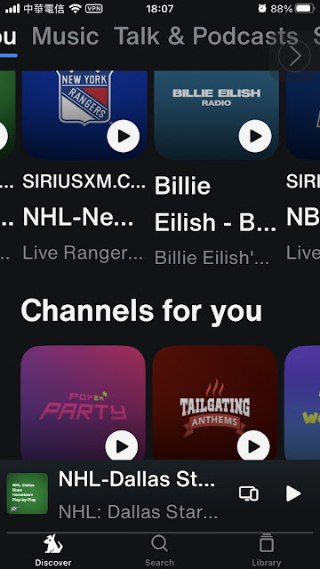
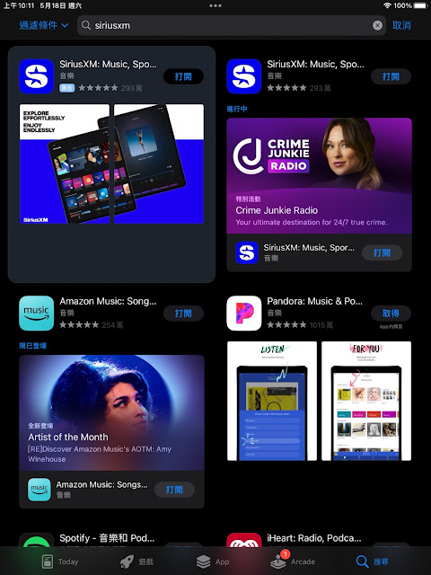
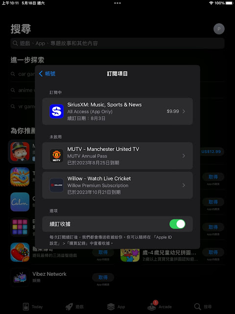
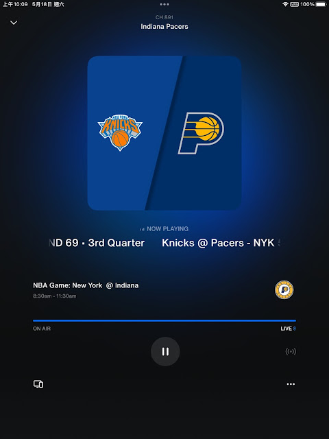
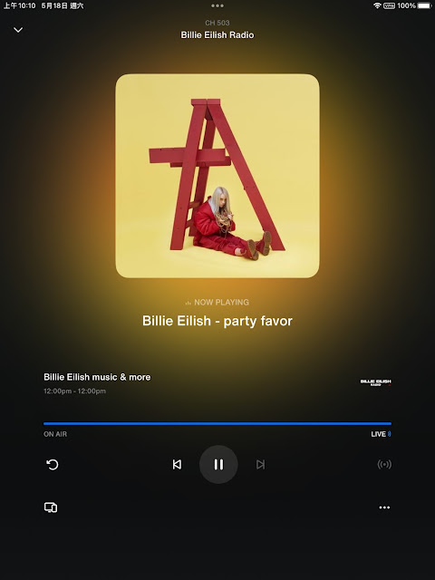
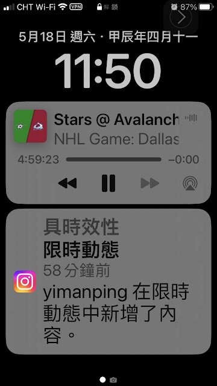

SiriusXM-美國在線廣播和播客平台

SiriusXM-SiriusXM是一個美國在線廣播和播客平台，其主要的競爭對手爲Tunein。不過因爲Tunein有在美國國外提供服務，一部分的廣播內容不需要VPN也可以收聽，所以大部分的人都對Tunein比較熟悉。不過因爲Tunein比較在地化，而且即便線上收聽美國的MLB、NHL、NBA等內容，一樣也要訂閱（9.99鎂）並且要VPN才能收聽。SiriusXM其實在網路電臺以及廣播部分都很類似，只是內容就更加貼近美國本土的內容。
不過SiriusXM無法像Tunein的原因，就是SiriusXM無法免費收聽，不像Tunein還有免費版本。另外，SiriusXM也需要美國itunes才可以下載並且訂閱，雖然不是很確定是否一定要美國信用卡才可以訂閱，不過還是透過itunes訂閱是比較好的選擇。透過美國itunes帳號下載SiriusXM app，然後在SiriusXM上註冊帳號並且訂閱，基本上訂閱作業就完成了。


但是用itunes訂閱，就是只能在app上收聽，無法用網頁版收聽，但是我們可以用bluestack的方式，就可以在電腦上收聽了。
因爲SiriusXM是美國市場爲主，所以除了音樂類型的廣播電臺或內容之外，大部分都是要VPN到美國，並且把手機的定位功能關掉，就可以收聽音樂以外（例如MLB、NHL、NBA）的內容，甚至還有霍華史騰的脫口秀，真的蠻不錯的。還有一點要注意的是，就是一開始登入SiriusXM的時候，一定要把VPN連線到美國，這樣之後收聽MLB、NHL、NBA等內容的廣播節目才不會被block。



雖然SiriusXM主要是以美國市場爲主，使用上也有一些不方便的地方，但是看在可以聽NBA、NHL，以及練習英文聽力的份上，我就這樣訂閱下去了。
延伸閱讀:
SiriusXM官網 iOS:SiriusXM另外，美國購物代運可參考:
https://a1253247.blogspot.com/p/hopshopgo-vs-spexeshop.html
對板球有興趣的可參考:
https://a1253247.blogspot.com/2022/05/cricket-line-written-by-admin-24-10.html
對生活飲食有興趣，可參考:
#PLEX